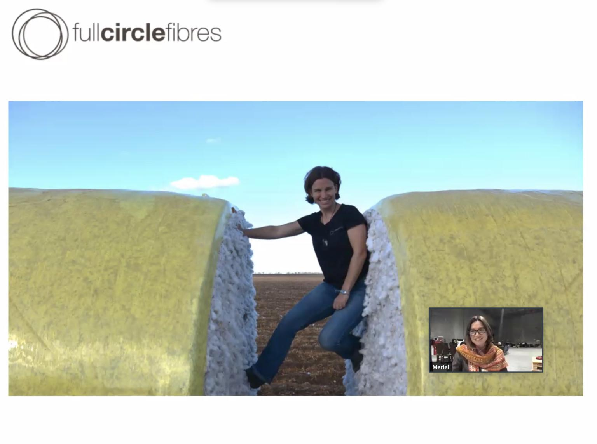

Gaining Global Perspective
In the past two months I’ve attended the Digital Design Days conference in Milan, participated in a UX Research Q & A in San Francisco, learnt about conducting online Design Sprints and the future of Agritech in Brisbane, spent (almost) 24 hours learning about UX projects all over the world and next week will be back to San Francisco for a three day conference on UX Research.
When Australia went into lockdown a few months ago and my university course went fully online I thought my world was about to drastically shrink and that my learning opportunities would be severely limited. I was concerned that without physically going to class everyday to interact with my tutors and peers that my progress towards becoming a UX Designer/Researcher would be halted. Instead I’ve had access to far more learning opportunities than would have been physically possible prior to lockdown and more opportunities to network then I could have imagined.
First up has been access to conferences. I was able to watch the live stream of QODE Brisbane and Digital Design Days in Milan. Both conferences also made their talks available on YouTube after the event, this was especially valuable due to the time difference constraints we often feel in the Southern Hemisphere. I was able to watch leaders in industry talk about everything from innovations in agritech happening here in Australia through to accessibility best practices when designing online and the future of AR throughout the world. Next week I’ll be able to watch the UXR Conference which would have been based in San Francisco. An opportunity which is invaluable to me with my goal of becoming a UX Researcher but which wouldn’t have been available to me living in Australia if it weren’t for the move to online.
It’s not just conferences which have moved online though. Prior to lockdown I was just starting to attend Meetups in Brisbane, something I’d loved doing when living in the Bay Area but which I’d gotten out of the habit of when I moved back to Australia. And then after my first two Brisbane Meetups it looked like it was all over as we entered lockdown! But many of the groups I was interested in moved to online including UX Brisbane and Circular Economies Futures. After taking part in the 24 Hours of UX event I realised that UX Meetups all over the world are now being held online and that there are so many opportunities to attend meetups outside of my own city, and even my own country, to learn from UX leaders all over the world.
Having Meetups online has been really interesting, I had imagined that the chances for networking and interacting would be lost, but that hasn’t been the case. It’s been great to connect with other members of the group and have the ability to ask questions of presenters in the chat window. Just as at live events we’ve been able to connect on LinkedIn to talk about presentations after the event and keep in contact. If anything, a lot of the nervousness that comes from meeting someone for the first time has been removed and instead when we go back to physical Meetups I’m looking forward to meeting the people I’ve connected with online in real life. It’s my hope that many of these groups will continue to stream their meetups even once we’re in person again so that we can continue to access a more global network and gain a global perspective on UX and to provide greater opportunity for people living in more rural/remote areas to take part in these events.
Meriel Chamberlin of Full Circle Fibres Speaking at Brisbane Circular Economy Futures Meetup